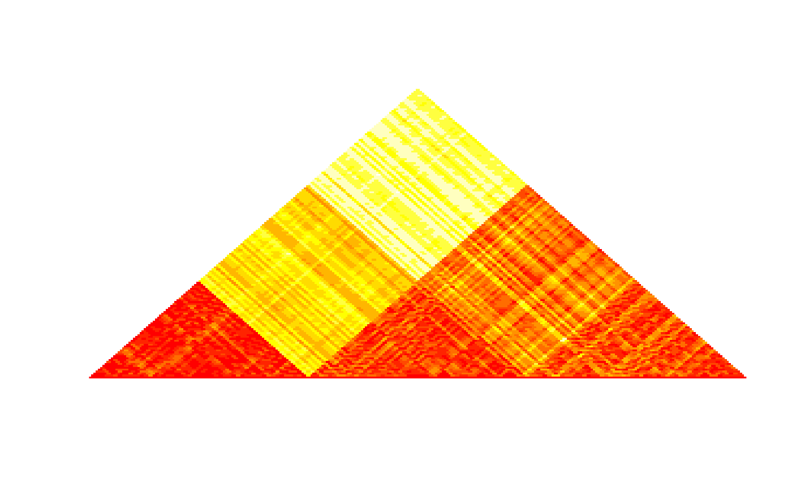

Heatmap of the (dis)similarity matrix
plotSim( mat, type = c("similarity", "dissimilarity"), clustering = NULL, dendro = NULL, palette = heat.colors, breaks = 10, log = TRUE, h = NULL, stats = c("R.squared", "D.prime"), main = NULL, col.clust = "darkblue", lwd.clust = 2, xaxis = FALSE, naxis = 10 )
| mat | matrix to plot. It can be of class |
|---|---|
| type | input matrix type. Can be either |
| clustering | vector of length the number of rows (columns) of the
matrix that contains a contiguity constrained clustering (as provided by
|
| dendro |
|
| palette | color palette. Default to |
| breaks | number of breaks used to set colors from the palette. Those
are based on the quantiles of the matrix entries and for skewed distributions
the actual number used to set the palette can be lower than |
| log | logical. Should the breaks be based on log-scaled values of the
matrix entries. Default to |
| h | if |
| stats | if |
| main | graphic title. |
| col.clust | color for the borders of the clusters (if |
| lwd.clust | line width for the borders of the clusters (if
|
| xaxis | logical. Should a x-axis be displayed? Default to |
| naxis | number of breaks to display on the x-axis. For
|
This function produces a heatmap for the used (dis)similarity matrix that can be used as a diagnostic plot to check the consistency between the obtained clustering and the original (dis)similarity
# input as HiTC::HTCexp object if (FALSE) { if (require("HiTC", quietly = TRUE)) { load(system.file("extdata", "hic_imr90_40_XX.rda", package = "adjclust")) plotSim(hic_imr90_40_XX) # with a constrained clustering res <- hicClust(hic_imr90_40_XX, log = TRUE) selected.capushe <- select(res) plotSim(hic_imr90_40_XX, clustering = selected.capushe, xaxis = TRUE) plotSim(hic_imr90_40_XX, clustering = selected.capushe, dendro = res) }} plotSim(dist(iris[ ,1:4]), log = FALSE)#>